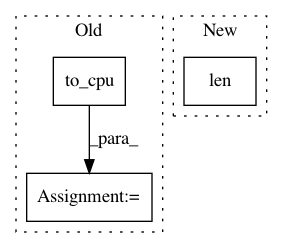

2d44d66f74c0be1f2952af80cc11a9076fd71e3c,chainercv/links/model/mask_rcnn/mask_head.py,,mask_loss_post,#Any#Any#Any#Any#Any#,275
Before Change
gt_mask_labels = xp.hstack(gt_mask_labels).astype(np.int32)
mask_loss = 0
for i in np.unique(cuda.to_cpu(mask_roi_indices)):
index = (mask_roi_indices == i).nonzero()[0]
gt_segm = gt_segms[index]
gt_mask_label = gt_mask_labels[index]
mask_loss += F.sigmoid_cross_entropy(
segms[index, gt_mask_label], gt_segm.astype(np.int32))
mask_loss /= batchsize
return mask_loss
def _segm_wrt_bbox(mask, gt_index, bbox, size, xp):
After Change
gt_mask_labels = xp.hstack(gt_mask_labels).astype(np.int32)
mask_loss = F.sigmoid_cross_entropy(
segms[np.arange(len(gt_mask_labels)), gt_mask_labels],
gt_segms.astype(np.int32))
return mask_loss
In pattern: SUPERPATTERN
Frequency: 3
Non-data size: 3
Instances
Project Name: chainer/chainercv
Commit Name: 2d44d66f74c0be1f2952af80cc11a9076fd71e3c
Time: 2019-03-04
Author: yuyuniitani@gmail.com
File Name: chainercv/links/model/mask_rcnn/mask_head.py
Class Name:
Method Name: mask_loss_post
Project Name: chainer/chainerrl
Commit Name: ad60498885593181f25f02cf01a72ef8f3f18167
Time: 2016-06-03
Author: muupan@gmail.com
File Name: dqn.py
Class Name: DQN
Method Name: _compute_loss
Project Name: chainer/chainercv
Commit Name: 7d96731b9a50e5455a1e31f676508af42801b7ae
Time: 2019-01-23
Author: 69guitar1015@gmail.com
File Name: chainercv/links/model/deeplab/deeplab_v3_plus.py
Class Name: DeepLabV3plus
Method Name: predict